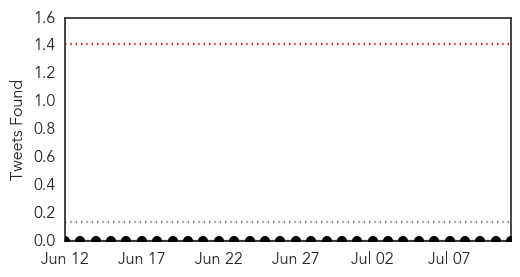
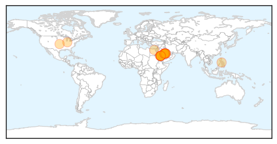

MERS
30-Day Web Trend
0 alerts, 0 warnings

30-Day Twitter Trend
0 alerts, 0 warnings

Article Locations
Article Confidences

Top Articles:
- 1.000
- Illinois man who twice met MERS patient in US apparently picked up infection, not sick
- 1.000
- Will The Virus Be A Problem For Canadians?
- 1.000
- Florida health officials announce a second US case of mysterious MERS virus
- 1.000
- American hospitalized with Middle East virus after return from Saudi Arabia; first case in US
- 0.999
- All You Need To Know About the MERS Virus
- 0.999
- Health officials say first US spread of Middle East virus not alarming; risk to public low
- 0.999
- US MERS case spread disease to a contact; first onward spread in North America
- 0.999
- What Is MERS? Answers To Common Questions About The Virus
- 0.999
- Expert panel convenes to advise WHO on whether MERS is a public health emergency
- 0.999
- With MERS concerns rising, WHO warns about some camel products, contact
- 0.999
- Exported MERS cases 'very likely,' WHO warns; Canada on the lookout, PHAC says
- 0.999
- MERS Virus Bringing Back Memories, Fears Of SARS
- 0.999
- MERS in hospitals significant but underplayed; Steps needed to stop spread
- 0.998
- MERS virus hasn't changed, not reason for surge in Saudi cases
- 0.997
- Officials revise diagnosis, say more testing shows MERS did not spread to Illinois man
- 0.996
- Toronto-made app helps doctors learn MERS symptoms
- 0.994
- MERS not yet serious emergency, World Health Organization says
- 0.993
- WHO releases details of 113 Saudi MERS cases that went unreported
- 0.988
- Saudi camels infected with MERS or MERS-like virus as early as 1992: study
- 0.970
- WHO: Basic hygiene can help prevent MERS spread
- 0.969
- Iran records its first 2 cases of potentially fatal Middle East respiratory virus
- 0.959
- Sudan Vision Daily
Top Tweets:
-
No tweets found for Jul 11, 2014
Measles
30-Day Web Trend
0 alerts, 0 warnings

30-Day Twitter Trend
0 alerts, 0 warnings

Article Locations

Article Confidences

Top Articles:
- 0.996
- Why are Canadian measles outbreaks so much larger than U.S. outbreaks?
- 0.980
- BCIT student sick with measles from Fraser Valley outbreak
- 0.978
- Measles 'early and active' in U.S.
- 0.970
- Manitoba measles case prompts warning about exposure at strip bar
- 0.963
- Never mind SARS or MERS, worry about measles: Commentary
- 0.958
- 100 measles cases reported in Fraser Valley outbreak
- 0.958
- More Suspected Cases In Regina Area, Officials Urge Shots
- 0.956
- Measles outbreaks prompt health officials to remind people to get vaccinated
- 0.915
- B.C. measles outbreak reveals vulnerability of unvaccinated children
- 0.900
- 8th Manitoba measles case has officials warning of exposure at strip bar
- 0.899
- Hospital measles alert
- 0.899
- Measles outbreaks hit 18-year high in Washington state
- 0.893
- Rash Of Measles Illustrates Importance Of Immunization
- 0.865
- Measles warning for two WA hospitals
- 0.823
- Chickenpox hits young cancer patient, despite vaccination
- 0.804
- Measles spreading in Fraser Valley East
- 0.803
- Measles outbreak in Khomas
- 0.798
- Measles Cases Underscore Importance of Immunization
- 0.772
- Metro Calgary Quotes Anti-Vaccine Homeopath Day After Measles Outbreak Declared
- 0.703
- Infant contracted measles from worker at Wichita restaurant
- 0.674
- Baby has latest case of measles to show up in the Edmonton area
- 0.660
- B.C. government won't force measles vaccination amid outbreak
- 0.645
- More probable measles cases in unimmunized children in Saskatchewan
- 0.640
- Anti-Vaxxers Are Stupid and Contagious
- 0.633
- Measles On Canadian Flight Prompts Health Warning
- 0.626
- 2nd measles case confirmed in Edmonton area
- 0.611
- Measles cases hit 18-year high in Washington state
- 0.600
- Saskatchewan reports measles case in baby whose family arrived by air this month
- 0.554
- IDPs woes: Few doctors willing to volunteer for relief work
- 0.552
- Anti-vaccine message from some naturopaths raises concerns
- 0.547
- Ontario Vaccine Rules Get Tougher For School-Age Kids
- 0.517
- Calgary Measles Cases Keep Unvaccinated Students At Home
- 0.510
- Stop the Fear-Based Propaganda About Vaccines
Top Tweets:
-
No tweets found for Jul 11, 2014